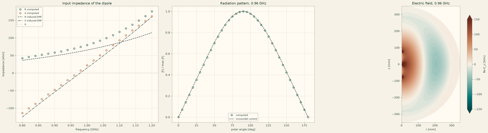
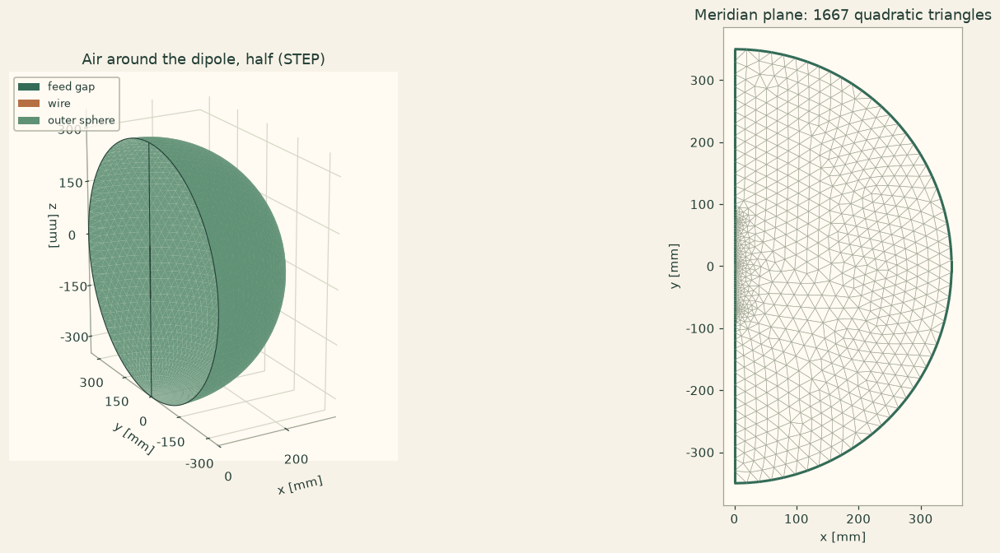

Docs › Examples › Half-wave dipole antenna
Antennas · 2D-axisymmetric
Half-wave dipole antenna
A centre-fed wire dipole of 0.48 wavelengths, fed by a lumped port across a 2 mm gap, radiates into free space around 1 GHz.
Run locally with OneSimulation. The example downloads are free. Running them requires an activated runtime. OneSimulation 1.0 · CPython 3.13 on macOS (Apple Silicon), Ubuntu 22.04 (x86-64), and Windows x64. Installation and activation · View pilot plans. Scope of the reference checks.


What it computes
OneSimulation cuts the meridian plane from a half solid of revolution read from STEP and solves all field components of the axisymmetric mode with Nédélec elements; a lumped port across the feed gap gives voltage, current, input impedance and reflection, a spherical absorbing layer takes up the outgoing wave, and the far field follows from the field on a sphere inside the layer. The script that builds the STEP file comes with the notebook.
What it checks
The reactance vanishes at 0.9695 GHz (0.4657 wavelengths), 1.0 % below the induced EMF method; the resistance there is 71.7 ohm against 61.3 ohm of the sinusoidal-current theory; the normalized pattern matches the sinusoidal current to 8.5e-3, the directivity is 1.631 (2.13 dBi) against 1.617, and the radiated power equals the power accepted at the port to 0.6 %.
Geometry
The notebook starts at the import of the CAD file half_wave_dipole_antenna.step: STEP (AP242), readable by any CAD program, with the names of the faces that the boundary conditions use. Put it next to the notebook.


The geometry script
The script half_wave_dipole_antenna_geometry.py builds the geometry with the CAD objects of OneSimulation and writes the file. Change a dimension there, run it, and run the notebook again.
"""Geometry of the OneSimulation example "Half-wave dipole antenna".
Builds with the CAD objects of OneSimulation the air around a centre-fed dipole antenna as one half
of a solid of revolution about the z axis: a ball of radius 350 mm (the outer 100 mm become an
absorbing layer) without the antenna, a perfectly conducting cylinder of radius 1 mm and length
144 mm with a feed gap of 2 mm in its middle. Faces in half_wave_dipole_antenna.step: outer (the
sphere), wire (the surface of the two halves), gap (the band of the feed gap) and axis (the cut
along the z axis).
"""
import numpy as np
from onesim.cad.d2 import Path, Profile, Segment
from onesim.cad.d3 import Revolution
outer, length, radius, gap = 0.35, 0.144, 0.001, 0.002
outline = Path(
(0.0, -outer),
(
Segment((0.0, outer), center=(0.0, 0.0), name="outer"),
Segment((0.0, length / 2), name="axis"),
Segment((radius, length / 2), name="wire"),
Segment((radius, gap / 2), name="wire"),
Segment((radius, -gap / 2), name="gap"),
Segment((radius, -length / 2), name="wire"),
Segment((0.0, -length / 2), name="wire"),
Segment((0.0, -outer), name="axis"),
),
)
Revolution(profile=Profile(outline), angle=np.pi).rotated((0, 0, 1), -np.pi / 2).save(
"half_wave_dipole_antenna.step"
)The notebook
The complete notebook, cell by cell. Run it to produce the figures and the comparison printout.
The half-wave dipole is the reference antenna of radio engineering: two thin conductors, together about half a wavelength long, fed in the middle. Here the wire has a radius of 1 mm and a length of 144 mm (0.48 wavelengths at 1 GHz) with a feed gap of 2 mm. A LumpedPort across the gap stands for the transmission line: a sheet of uniform current around the gap whose voltage and current give the input impedance directly, and the S-parameter against its reference impedance.
The antenna and its field are symmetric about the wire: the electric field has only \(E_r\) and \(E_z\), the magnetic field only \(H_\varphi\). FrequencyDomainMaxwell with the polarization Erphiz and azimuthal mode \(m=0\) solves the time-harmonic Maxwell equation
on the meridian plane (\(r\), \(z\)) with second-order Nédélec elements. A spherical absorbing layer (spherical_pml) between radii 250 and 350 mm takes up the outgoing wave.
| boundary | condition |
|---|---|
gap | lumped port, 73 Ω, 1 W |
wire | perfect electric conductor |
outer | perfect electric conductor behind the absorbing layer |
axis | regular: \(E_r=0\) |
Reference (C. A. Balanis, Antenna Theory, 4th ed., Wiley 2016, §4.5 and §8.5). With the sinusoidal current \(I(z)=I_m\sin k(\ell/2-|z|)\) a centre-fed dipole of length \(\ell\) radiates
and the induced EMF method gives its input impedance \(Z=R+\mathrm jX\) in terms of the sine and cosine integrals (Balanis eq. 8-60, with the wire radius \(a\) in the reactance). The half-wave dipole radiates with directivity 1.64 (2.15 dBi) and a resistance of 73 Ω; its reactance vanishes slightly below half a wavelength. The sinusoidal current is an assumption: a wire of finite radius fed across a gap of finite size carries a somewhat different current, so that its impedance departs from the induced EMF values by up to some ten percent near resonance, while the pattern, which only needs the current to be roughly sinusoidal, and the resonant length agree closely.
import numpy as np
from onesim.cad.exchange import load
from onesim.materials import VACUUM_PERMEABILITY, VACUUM_PERMITTIVITY
from onesim.materials.electromagnetic import (
IsotropicElectromagneticMaterial,
spherical_pml,
)
from onesim.meshing import TriangularMesher
from onesim.numerics import Numerics
from onesim.numerics.fem import FiniteElement, Nedelec, RevolvedH1SpaceFactory
from onesim.numerics.linear import ComplexSparseDirect
from onesim.physics.electromagnetics import (
FrequencyDomainMaxwell,
LumpedPort,
PerfectElectricConductor,
far_field,
input_impedance,
scattering_parameters,
)
from onesim.simulation import Problem, Simulation
from onesim.visualization import plots, theme
from scipy.special import sici
theme.set()
light, eta0 = 1 / np.sqrt(VACUUM_PERMEABILITY * VACUUM_PERMITTIVITY), np.sqrt(
VACUUM_PERMEABILITY / VACUUM_PERMITTIVITY
)
length, radius = 0.144, 0.001Geometry and mesh
load reads the half solid of revolution; section with the plane \(y=0\) returns its meridian plane with the face names. Quadratic triangles of 20 mm (a fifteenth of the wavelength at 1 GHz) fill the air, refined to 2 mm along the wire and 0.7 mm across the gap.
air = load("half_wave_dipole_antenna.step")
plane = air.section((0, 1, 0))
sides = plane.boundaries
mesh = TriangularMesher(
target_size=0.02, local_sizes={"wire": 0.002, "gap": 0.0007}, grading=0.25
).generate(plane)
fig = plots.figure(1, 2, size=(14, 6))
plots.geometry(
air,
selection={
"feed gap": air.boundaries.gap,
"wire": air.boundaries.wire,
"outer sphere": air.boundaries.outer,
},
labels=False,
camera=plots.Camera(elevation=20, azimuth=-120),
length_unit="mm",
title="Air around the dipole, half (STEP)",
ax=fig[0],
)
plots.mesh(
mesh,
groups=("all",),
legend=False,
length_unit="mm",
title=f"Meridian plane: {mesh.cell_count} quadratic triangles",
ax=fig[1],
)
plots.show()Model
simulate solves the antenna at one frequency, fed with 1 W through a 73 Ω port. The sweep runs from 0.8 to 1.2 GHz.
numerics = Numerics(
spatial=FiniteElement(element=Nedelec(order=2), provider=RevolvedH1SpaceFactory()),
linear_solver=ComplexSparseDirect(),
)
simulate = lambda f: (
lambda m: (
Simulation(
problem=Problem(
name="Dipole antenna",
geometry=plane,
physics=(m,),
boundary_conditions=(
LumpedPort(
physics=m,
boundary=sides.gap,
impedance=73.0,
incident_power=1.0,
),
PerfectElectricConductor(
physics=m, boundary=sides.wire | sides.outer
),
),
),
mesh=mesh,
numerics=numerics,
).solve_stationary(),
m,
)
)(
FrequencyDomainMaxwell(
domain=plane.domain(),
frequency=f,
polarization="Erphiz",
azimuthal_mode=0,
phasor_convention="exp(-i*omega*t)",
amplitude_convention="peak",
material=spherical_pml(
IsotropicElectromagneticMaterial(), inner_radius=0.25, outer_radius=0.35
),
)
)
frequencies = np.round(np.linspace(0.8e9, 1.2e9, 21), -6)
runs = {f: simulate(f) for f in frequencies}
def induced_emf(kl, ka):
si, ci, euler = (lambda x: sici(x)[0]), (lambda x: sici(x)[1]), 0.5772156649
resistance = (
eta0
/ (2 * np.pi)
* (
euler
+ np.log(kl)
- ci(kl)
+ 0.5 * np.sin(kl) * (si(2 * kl) - 2 * si(kl))
+ 0.5 * np.cos(kl) * (euler + np.log(kl / 2) + ci(2 * kl) - 2 * ci(kl))
)
)
reactance = (
eta0
/ (4 * np.pi)
* (
2 * si(kl)
+ np.cos(kl) * (2 * si(kl) - si(2 * kl))
- np.sin(kl) * (2 * ci(kl) - ci(2 * kl) - ci(2 * ka**2 / kl))
)
)
return (resistance + 1j * reactance) / np.sin(kl / 2) ** 2Results
The input impedance over the band (engineering convention \(R+\mathrm jX\); the model uses \(e^{-i\omega t}\), hence the conjugate) against the induced EMF method, the resonance where the reactance vanishes, and the reflection against 73 Ω.
wave = lambda f: 2 * np.pi * f / light
impedance = {f: np.conj(input_impedance(*run)) for f, run in runs.items()}
theory = {f: induced_emf(wave(f) * length, wave(f) * radius) for f in frequencies}
print("f [GHz] l/lambda Z computed [ohm] Z induced EMF [ohm] |S11| [dB]")
for f in frequencies:
print(
f"{f / 1e9:6.2f} {length * f / light:9.3f} {impedance[f].real:7.2f} {impedance[f].imag:+8.2f}j {theory[f].real:7.2f} {theory[f].imag:+8.2f}j "
f"{20 * np.log10(abs(scattering_parameters(*runs[f])[(0, 0)])):10.1f}"
)
reactance = np.array([impedance[f].imag for f in frequencies])
emf_reactance = np.array([theory[f].imag for f in frequencies])
resonance = np.interp(0.0, reactance, frequencies)
emf_resonance = np.interp(0.0, emf_reactance, frequencies)
print(
f"resonance (X = 0): computed {resonance / 1e9:.4f} GHz (l = {length * resonance / light:.4f} wavelengths), induced EMF "
f"{emf_resonance / 1e9:.4f} GHz (l = {length * emf_resonance / light:.4f}), difference {resonance / emf_resonance - 1:+.1%}"
)
print(
f"resistance at resonance: computed {np.interp(resonance, frequencies, [impedance[f].real for f in frequencies]):.1f} ohm, induced EMF "
f"{np.interp(emf_resonance, frequencies, [theory[f].real for f in frequencies]):.1f} ohm"
)Radiation pattern and directivity
At the frequency of the sweep closest to resonance, far_field returns the far field \(\mathbf F(\theta)\) (\(\mathbf E\sim e^{\mathrm ikR}/R\,\mathbf F\)) from the field on a sphere of 200 mm inside the absorbing layer. The directivity follows from the pattern, \(D=4\pi|F|^2_{\max}/\int|F|^2\,\mathrm d\Omega\), and the radiated power \(\frac{1}{2\eta_0}\int|F|^2\,\mathrm d\Omega\) must equal the power accepted at the port.
near = min(frequencies, key=lambda f: abs(f - resonance))
result, m = runs[near]
theta = np.linspace(1e-3, np.pi - 1e-3, 721)
pattern = np.linalg.norm(far_field(result, m, theta, radius=0.2), axis=1)
half = wave(near) * length / 2
sinusoidal = np.abs((np.cos(half * np.cos(theta)) - np.cos(half)) / np.sin(theta))
total = 2 * np.pi * np.trapezoid(pattern**2 * np.sin(theta), theta)
directivity = 4 * np.pi * pattern.max() ** 2 / total
sinusoidal_directivity = (
4
* np.pi
* sinusoidal.max() ** 2
/ (2 * np.pi * np.trapezoid(sinusoidal**2 * np.sin(theta), theta))
)
accepted = 1.0 - abs(scattering_parameters(result, m)[(0, 0)]) ** 2
print(
f"at {near / 1e9:.2f} GHz: pattern against the sinusoidal current, both normalized to their maximum: largest difference "
f"{np.max(np.abs(pattern / pattern.max() - sinusoidal / sinusoidal.max())):.1e}"
)
print(
f"directivity {directivity:.3f} ({10 * np.log10(directivity):.2f} dBi), sinusoidal current {sinusoidal_directivity:.3f} "
f"({10 * np.log10(sinusoidal_directivity):.2f} dBi)"
)
print(
f"radiated power {total / (2 * eta0):.4f} W, accepted at the port 1 - |S11|^2 = {accepted:.4f} W"
)Figure
Left: input resistance and reactance over the band against the induced EMF method. Middle: the normalized radiation pattern against the sinusoidal current. Right: the instantaneous field \(E_z\) on the meridian plane near resonance (colour limits at three times the far field of 1 W at 200 mm): the wave fronts leave the antenna and die out in the absorbing layer beyond 250 mm.
r, z = np.asarray(mesh.coordinates).T
corners = (lambda nodes: nodes[np.hypot(r[nodes], z[nodes]) < 0.349])(
np.unique(np.asarray(mesh.cells)[:, :3])
)
vertical = np.zeros(len(r))
vertical[corners] = np.real(
result.field(m.electric_field).evaluate(
np.column_stack((r[corners], z[corners])), tolerance=1e-3
)[:, 2]
)
fig = plots.figure(1, 3, size=(24, 6.5))
plots.line(
points={
"R computed": (frequencies / 1e9, [impedance[f].real for f in frequencies]),
"X computed": (frequencies / 1e9, reactance),
},
reference={
"R induced EMF": (frequencies / 1e9, [theory[f].real for f in frequencies]),
"X induced EMF": (frequencies / 1e9, emf_reactance),
},
hlines={"0": 0.0},
xlabel="frequency [GHz]",
ylabel="impedance [ohm]",
title="Input impedance of the dipole",
legend="upper left",
ax=fig[0],
)
plots.line(
points={"computed": (np.degrees(theta[::20]), pattern[::20] / pattern.max())},
reference={
"sinusoidal current": (np.degrees(theta), sinusoidal / sinusoidal.max())
},
xlabel="polar angle [deg]",
ylabel="|F| / max |F|",
title=f"Radiation pattern, {near / 1e9:.2f} GHz",
legend="lower center",
ax=fig[1],
)
plots.heatmap(
1e3 * r,
1e3 * z,
vertical,
triangles=np.asarray(mesh.cells)[:, :3],
colormap="diverging",
limits=(-150.0, 150.0),
label="Re E_z [V/m]",
xlabel="r [mm]",
ylabel="z [mm]",
title=f"Electric field, {near / 1e9:.2f} GHz",
ax=fig[2],
)
plots.show()Going further
Make the wire thicker in half_wave_dipole_antenna_geometry.py: the resonance moves to a shorter electrical length and the band widens. A conducting plane through the feed (half the antenna, PerfectElectricConductor on the plane z = 0) gives the quarter-wave monopole with half the impedance.